代码生成的视频
每一帧都由代码在浏览器里实时绘制。
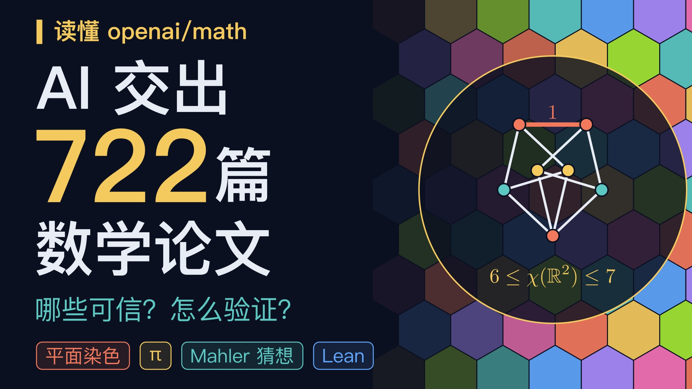
读懂 openai/math讲解视频 · 13:46 · 平面染色、π 的无理性指数、Mahler 猜想与 Lean 验证
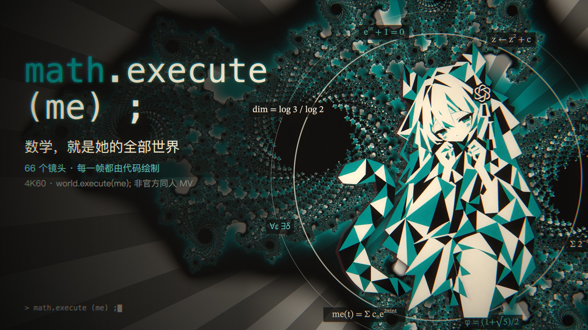
math.execute (me) ;Mili — world.execute (me) ; 非官方同人 MV · 3:32（需自备音频）
408 MVRemotion 网页实时版
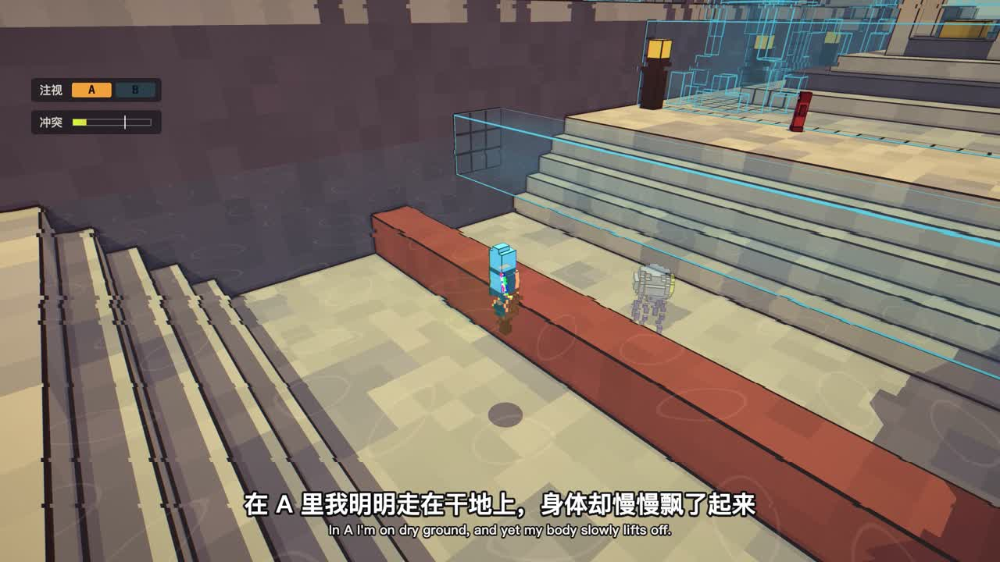
叠界 · Code Odyssey可玩体素 demo · 双世界、弹簧与冲突场
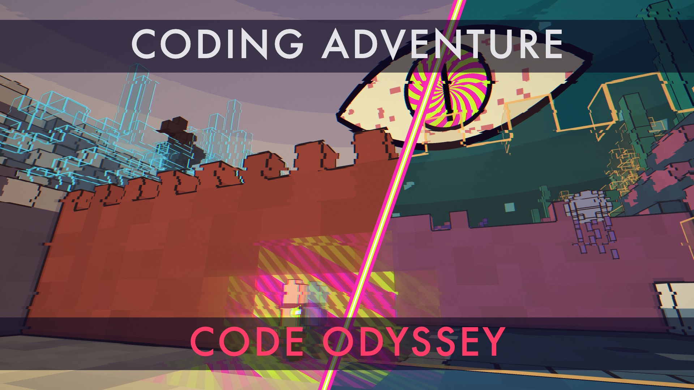
叠界 · 讲解视频15:21 · 浏览器实时渲染 · 中英双语字幕
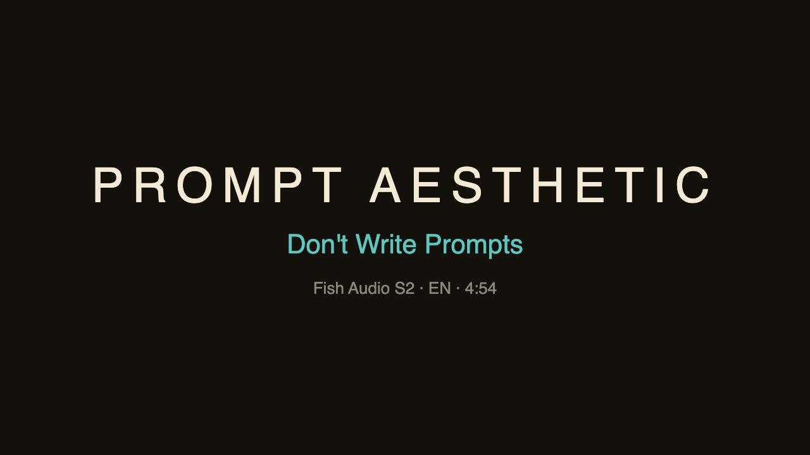
提示词美学 · Prompt AestheticFish S2 英文配音 · 浏览器实时渲染 · 中英双语字幕
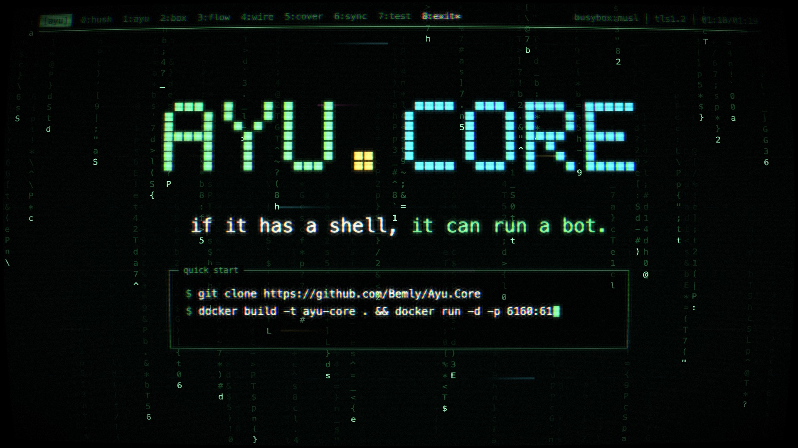
Ayu.Core纯 shell SNS 机器人框架 · 宣传短片 1:19 · 浏览器实时渲染
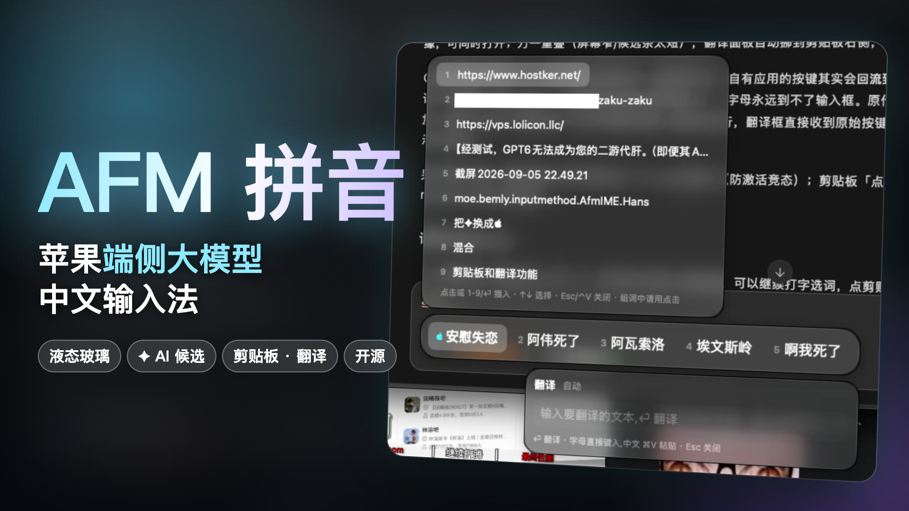
AFM 拼音 · 介绍视频macOS 液态玻璃输入法 · 4:33 · 浏览器实时渲染
WinterJS 宣传片SpiderMonkey 运行时介绍 · Remotion 网页实时版
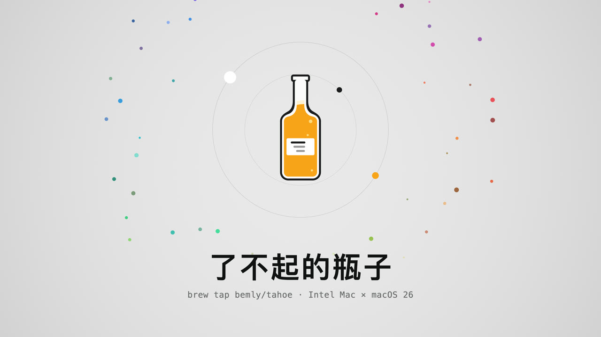
了不起的瓶子brew tap bemly/tahoe · 1:40 · 浏览器实时渲染
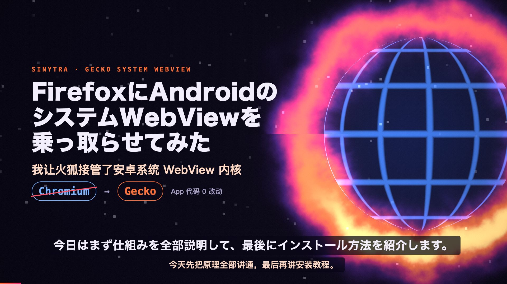
Sinytra火狐接管安卓系统 WebView · 7:53 · 浏览器实时渲染 · 日中双语字幕
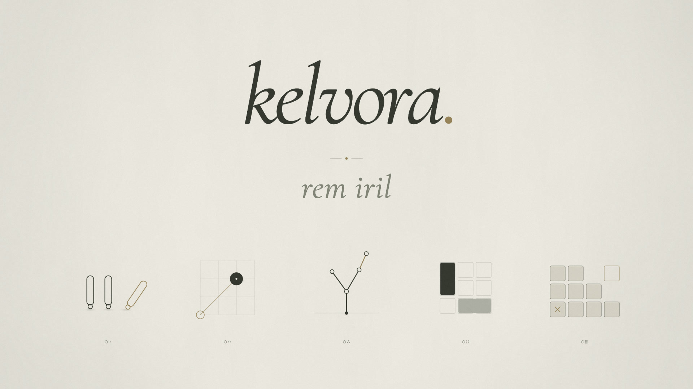
kelvora · 必胜之道自制语言讲组合博弈 · 1:21 · 浏览器实时渲染
文笔坐标中文创意写作盲评 · 3:26 · 浏览器实时渲染 · 35 卡雷达图
文笔坐标 · 逐题鉴赏107 题菜单 · 单击看题目 / 作答 / 裁判打分与评语 · 浏览器在线渲染
杂鱼手书 · AI 娘版原版手书翻拍 · 3:27 · 1080p AV1
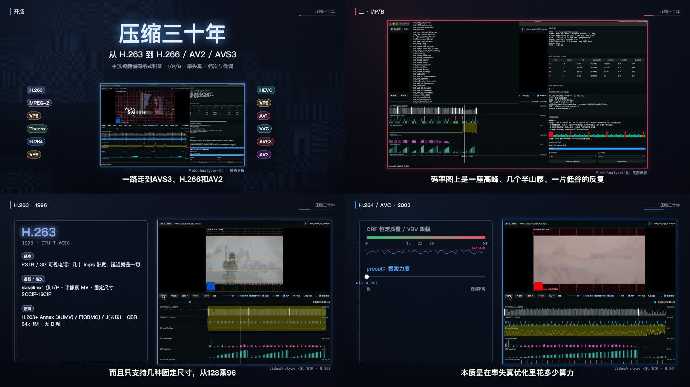
压缩三十年视频编码科普 · 15:57 · 浏览器实时渲染（无声版）
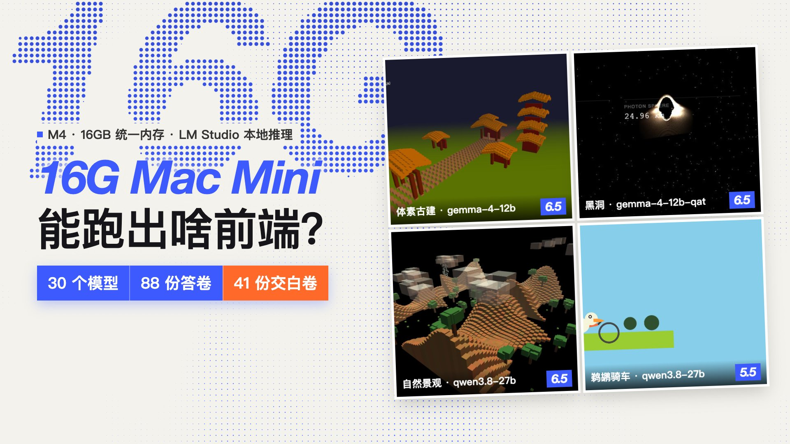
16G Mac Mini测试30 本地模型 × 4 道前端题 · 88 份答卷 · 浏览器实时渲染
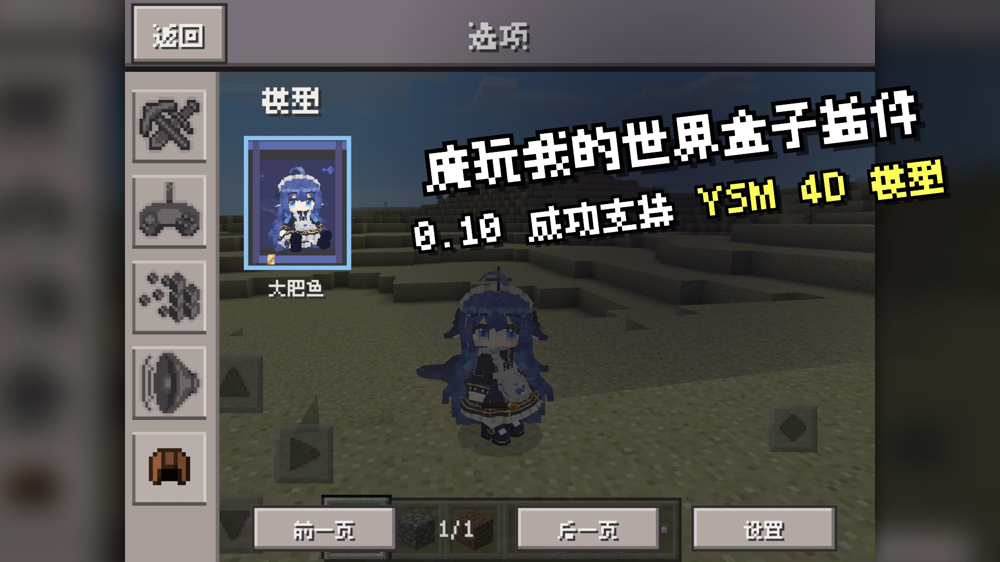
魔玩我的世界盒子MC PE 0.10 插件介绍 · 8:49 · 浏览器实时渲染（无声版）
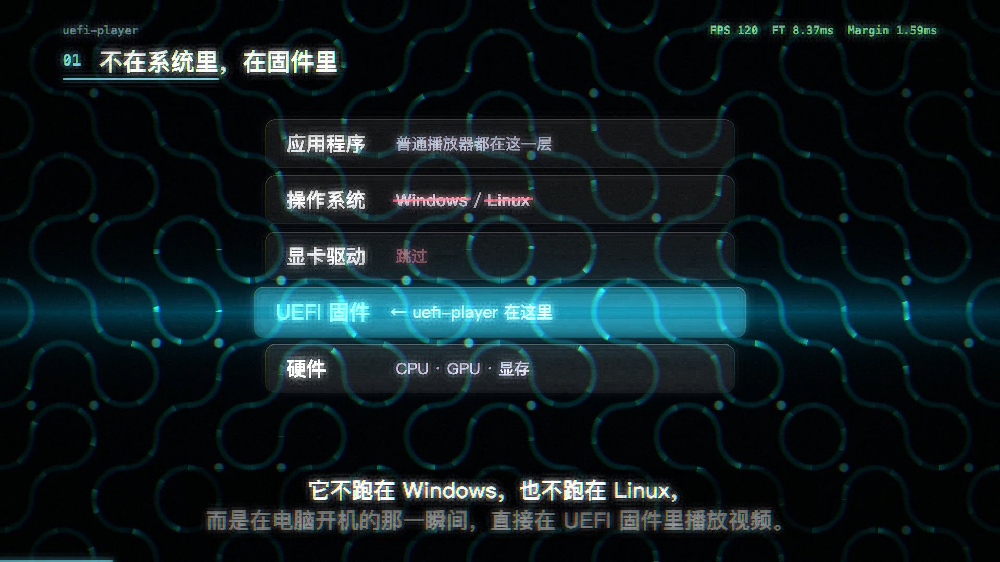
UEFI Player开机直接在固件里播视频 · 介绍 + 详解（视频待上传）